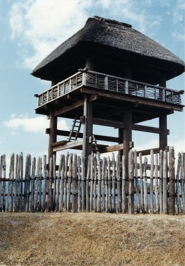
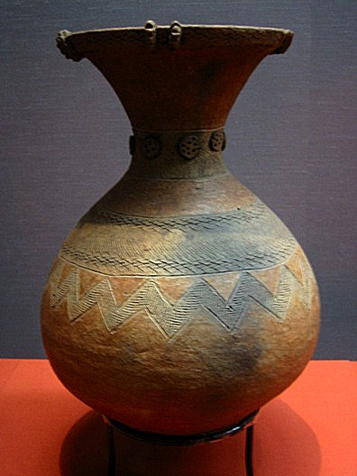
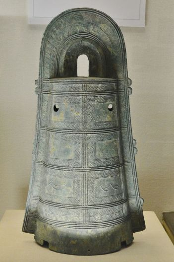
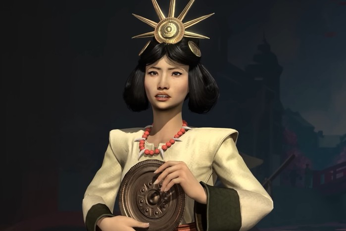

Some time around 500 B.C, there was a second major migration of people into Japan. These emigrants came to Japan from the Asian continent through the Korean peninsula, presumably to escape disturbed and unsafe conditions on the Asian mainland. These immigrants to Japan would usher in a new period in the prehistory of Japan.
The Yayoi people are named so because of their distinct style of pottery, which was first found in the Yayoi district of Tokyo in 1884. Yayoi pottery has a marked regression in terms of the decorative spirit that was shown by Jomon potters. Yayoi pottery was more simple and utilitarian. The pottery of this period gives clear indications of one of the Yayoi people's most important importations from the Asian Continent: agriculture.
The Yayoi people introduced wet-rice agriculture to Japan from Asia. Yayoi pots have been found containing burnt rice grains and chaff with some pots even having patterns engraved on them by grains of rice. The introduction of agriculture onto the Japanese archipelago had many effects on society. The western half of Japan is on the eastern extremities of the Monsoon region, whose seasonal rains supported the conditions needed for paddy fields. The farming of rice meant that there was a more secure supply of food available to the Yayoi people, triggering a population increase. The tending of paddy fields required a united and communal effort, which resulted in the development of organisational structures and in time social hierarchies. This would lead later on to the formation of small kingdoms throughout the islands ruled by regional chieftains.
The Jomon population already well-established in Japan intermingled with the Yayoi newcomers. Archaeological evidence indicates the Yayoi people primarily inhabited Kyushu while the Jomon remained the majority group on the island of Honshu, the largest of the Japanese islands. The Jomon people gradually disappeared as the Yayoi period progressed as they lived in tandem with the Yayoi. What remained of the Jomon people in the eastern and northern parts of Honshu are believed to be the ancestors of the Emishi, an ethnic group that were in conflict the Yamato (Japanese) court in later centuries and who in turn could be the ancestors of the Ainu, a small ethnic group that now inhabits the northern island of Hokkaido.
The social customs [of the Wa] are not lewd. The men wear a band of cloth around their heads, exposing the top. Their clothing is fastened around the body with little sewing. The women wear their hair in loops. Their clothing is like an unlined coverlet and is worn by slipping the head through an opening in the center. [The people] cultivate grains, rice, hemp, and mulberry trees for sericulture. They spin and weave and produce fine linen and silk fabrics. There are no oxen, horses, tigers, leopards, sheep, or magpies. Their weapons are spears, shields, and wooden bows made with short lower part and long upper part; and their bamboo arrows are sometimes tipped with iron or bone.
- the Wei Zhi, a Chinese history written in the 3rd Century A.D

Reconstructed Yayoi tower at the Yoshinogari site in northern Kyushu

Yayoi pottery

A Yayoi Dotaku bell, presumably used in rituals. It could not ring
The Yayoi period saw the increase of relations and intercourse with the Asian Mainland. The Yayoi people are known to have traded with Korea and China. It is from this time period that Japan enters the historical record, being recorded in contemporary Chinese histories. The Yayoi people did not have a writing system for their language and thus there is no native Japanese records from the Yayoi period. The earliest Chinese records of Japan date back to 25 A.D, and these early Chinese records refer to Japan as Wa (倭), which means literally something like "dwarf".
The early Chinese records of Japan provide some detail about the state of the archipelago and the people living there. Contacts between China and Japan meant that Chinese luxuries such as bronze tools and crafts were traded to Japanese states. States that were located closer to the Mainland and Korea, say in northern Kyushu, were more stragetically placed to conduct trade with the Mainland. This meant they had a ready access to better bronze weaponry and rare articles from China. It is understood from Chinese records documenting the 1st to 3rd centuries A.D. that the political atmosphere was disturbed and that there was civil war between the different emerging states. One of these states was of interest to the ancient Chinese observers, as it is to modern historians. This was the state of Yamatai, which was ruled by a queen named Himiko. The Wei Zhi describes Himiko and her state of Yamatai.

Queen Himiko as depicted in the 2025 video game Civilization VII
"The country formerly had a man as ruler. For some seventy or eighty years after that there were disturbances and warfare. Thereupon the people agreed upon a woman for their ruler. Her name was Pimiko. She occupied herself with magic and sorcery, bewitching the people. Though mature in age, she remained unmarried. She had a younger brother who assisted her in ruling the country. After she became the ruler, there were few who saw her. She had one thousand women as attendants, but only one man. He served her food and drink and acted as a medium of communication. She resided in a palace surrounded by towers and stockades, with armed guards in a state of constant vigilance."
Yamatai has been of interest to modern scholars due to the similarity of the name with Yamato, the name of the unified state that would form in the 4th or 5th centuries and whose ruling house is the same as that of the current Japanese imperial family. The traditional account of the Yamato dynasty's founding locates the state of Yamato in the Yamato region in the Kinai plain, the area around modern Kyoto and Osaka. Debate has thus centered around the location of Yamatai. Luckily, the chroniclers of the Wei Zhi give directions to the location of Yamatai. Unluckily, they do not make sense. Interpreting the directions in two different ways, one can end up somewhere in Kyushu, or they could end up in the Yamato region. The latter would seem to confirm that Yamatai is Yamato. However, there is not much consensus on the issue and the debate still rages.